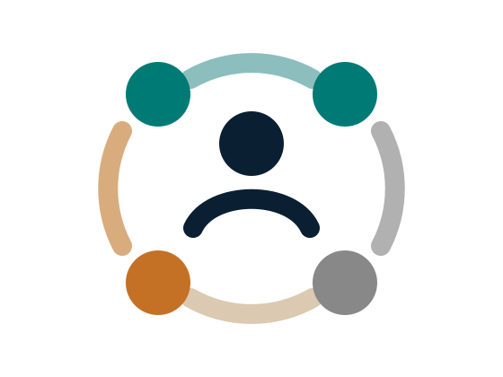

System safety
How hazards, controls, constraints and interactions are examined across the wider system.
The Socio-Technical Safety Studio
System safety, human factors and socio-technical analysis.
The Studio brings together research-informed resources, method notes and selected services on risk, accident analysis and safety in systems where people, technology and organisations work together.

Start where you are
The site is organised for readers who want an introduction, a research resource or a focused conversation.
Topics in the Studio
These areas organise the resources and services on this site. Each addresses a distinct part of system safety, while recognising that the methods and questions often overlap.
How hazards, controls, constraints and interactions are examined across the wider system.
How people shape and are shaped by tools, tasks, procedures, teams and operational environments.
How risks are identified, analysed, prioritised and discussed in practice.
How different safety perspectives, including Safety-I, Safety-II and systems thinking, support learning, reflection and improvement.
How safety assessment changes when AI, automation, LLMs and new operational concepts are introduced.
Resources
The library contains accessible guides and method notes, each linked to related publications and selected references.
A plain-language guide to why safety depends on the way people, technology, tasks, organisations and regulation work together.
A careful guide to where large language models may help, and why expert judgement, evidence and traceability still matter.
A practical comparison of learning from harm, learning from everyday work and using systems theory to control unacceptable losses.
Services
Selected talks, workshops, review input, research collaboration and applied support are available where the question fits Dr Kaya's expertise.